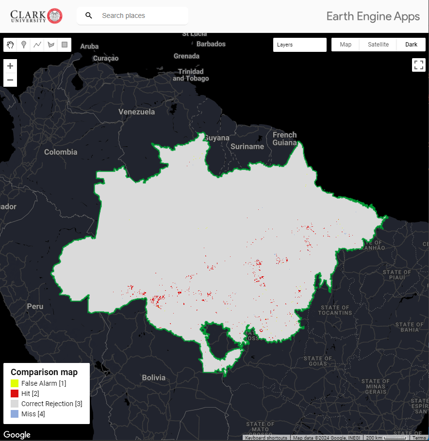

About Me
I'm from the Brazilian Amazon, a region that has always inspired me to investigate environmental dynamics and landscape change. With more than 10 years' experience as a researcher, I have focused my career on Geographic Information Systems (GIS) and remote sensing, with a special interest in Spatial Analysis and Uncertainty in Spatial Data. Throughout my career, I have contributed to the dissemination and training of landscape change mapping technologies in Amazonian countries in South America. Among my contributions, I highlight the generation of time series maps of deforestation and land use, essential tools for environmental monitoring in the region. Currently, my PhD focuses on understanding how to identify patterns of change over time in multi-category maps. I am especially interested in the challenges and opportunities presented by the proliferation of maps and the democratization of technologies that make it possible to create maps from different sources and methodologies.
Introduction
Welcome to my personal website! This is a space where I share my academic journey, research, and projects related to my expertise in SIG, and Remote Sensing.
Education
- Bachelor's degree in Environmental Engineering from the State University of Pará
- Postgraduate degree in Statistics from the Federal University of Pará
- Currently pursuing a Ph.D. in Geography at Clark University
Awards
- Emerging Leader by Skoll Foundation
Projects
I have worked on several research projects focusing on Geographic Information Systems (GIS), Remote Sensing, and Land Use and Land Cover Mapping.
Poster Gallery
- Patterns of Change in Irrigation and Land Cover in Western Bahia, Brazil [AAG 2024]
- Comparison Time Series Maps of Deforestation in the Amazon [AAAS 2025]


Map Gallery
My Apps
Explore my deforestation map comparison app.
Overview of the GEE App:
